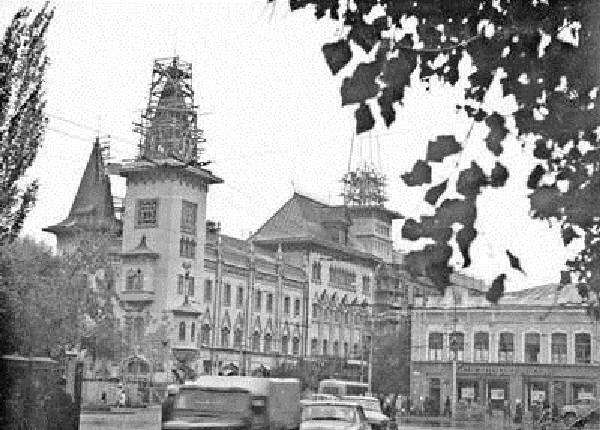
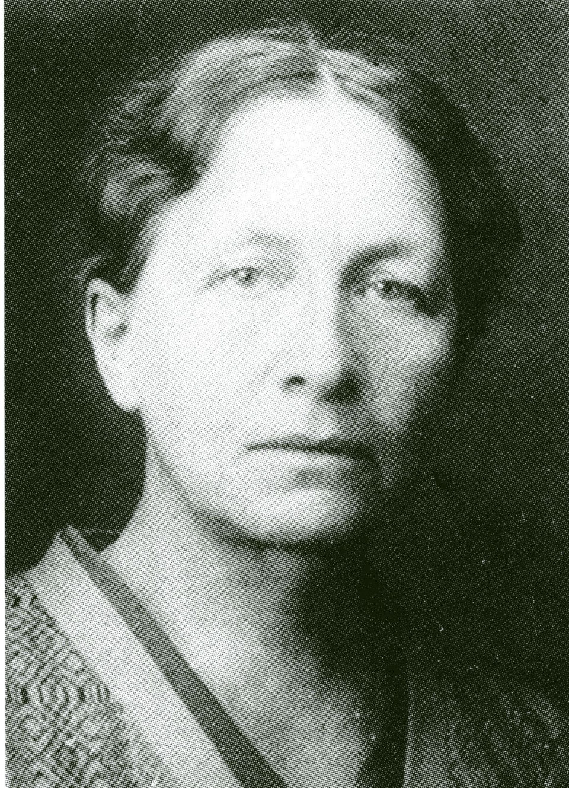

Война внесла свои коррективы в работу библиотеки. Коллектив консерватории, в том числе часть библиотекарей, был эвакуирован в Саратов, куда для обеспечения учебного процесса были направлены необходимые нотные и книжные издания. Почти весь фонд, частично укрытый от бомбёжек в сыром, не оборудованном для целей хранения книг подвале (на полу), остался в Москве. Из столицы не уехали всего четыре сотрудника. 
В условиях военного времени обслуживались фронтовые и другие концертные бригады, театральные и творческие коллективы. В одном из отчётов библиотеки того времени указано, что только за ноябрь-декабрь 1941 г. она обслужила 19 коллективов, которым было выдано свыше 1000 экз. нот. Обслуживанием занимался всего один библиотекарь, так как остальные были заняты комплектованием и обработкой фонда, перепиской нот для выдачи. К концу 1942 г. возобновились занятия в московских стенах консерватории, и тогда в штат библиотеки были зачислены ещё четыре человека.
Поразительно, что в это время ГУУЗ ВКИ поддержало библиотеку, профинансировав выполнение целого ряда работ научного содержания - описание хранящихся в ней мемориальных коллекций выдающихся музыкантов и справочных изданий. В 1943 г. в штате библиотеки было уже 15 единиц. Следует заметить, что, кроме своих прямых обязанностей, сотрудники библиотеки занимались колкой дров, топкой печей, уборкой помещений и дежурили на крышах, спасая здание от пожара.
В военное время фонд библиотеки столь интенсивно был вовлечён в обслуживание творческих, в том числе иногородних организаций, что в 1944 г. в структуру библиотеки был введён специальный отдел по работе с театрами: из 15 тогдашних библиотечных ставок четыре были отданы в этот отдел, в том числе две - переписчикам нот. В архивах библиотеки хранится список театров и концертных организаций, куда по их запросам отправлялись ноты.
В последние годы войны и сразу по её окончании, в восстановительный период, библиотека консерватории, учитывая тяжесть сложившейся в стране ситуации, в кратчайшие сроки предоставляла многим музыкальным учебным заведениям - часто в ущерб собственному фонду - необходимые учебные материалы. Делилась дублетными экземплярами.
«Интенсивность труда возросла необычайно, ибо эта небольшая группа работников выполняла, хотя и в более узком масштабе, все работы, которые были свойственны библиотеке в довоенное время».
В январе 1944 г. дирекцией консерватории был утверждён Устав библиотеки, разработанный М.И. Медведевой, - документ, подтверждавший права и обязанности библиотеки и устанавливавший её взаимоотношения с другими структурными подразделениями вуза, первый документ, регламентировавший деятельность библиотеки Московской консерватории. На основании постановления Совета народных комиссаров №114 от 16 августа 1944 г. библиотека Московской консерватории, в числе немногих, была включена во вторую категорию по оплате труда библиотечных работников. При этом был учтен и научный статус библиотеки, которая, помимо обычных функций вузовской библиотеки, вела широкомасштабную научно-методическую работу не только в стенах собственного вуза, но и в отрасли в целом. 
В 1945 году в связи со смертью М.И.Медведевой директором библиотеки назначена Елизавета Николаевна Артемьева.
К этому времени сложилась структура библиотеки: отдел комплектования и учёта, сектор хранения, отдел обработки и каталогов, отдел абонемента и читального зала музыкальной литературы, отдел учебников и художественной литературы, справочно-библиографический и научный отделы.
После всех утрат, который понес фонд библиотеки в первой половине 40-х гг., в послевоенные годы стала очевидной необходимость его проверки. Проверка была проведена с 1946 по 1948 г., при этом обслуживание читателей не прекращалось.
В результате был создан топографический каталог, поставлены на учет не заинвентаризованные издания.
(из книги" Библиотека Московской консерватории" Э.Б.Рассиной).